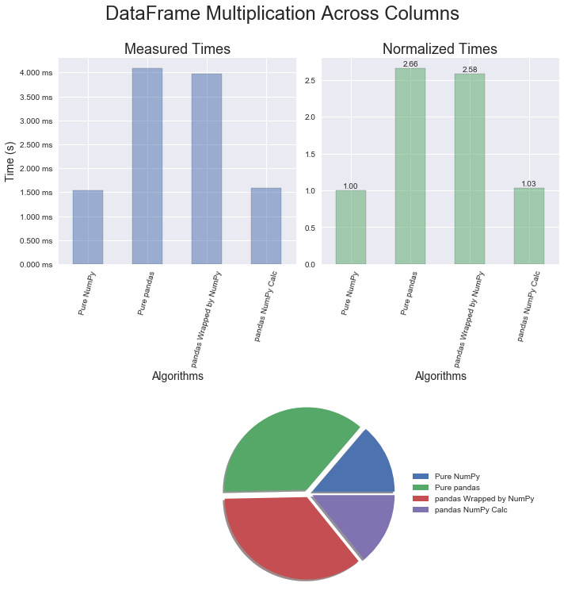
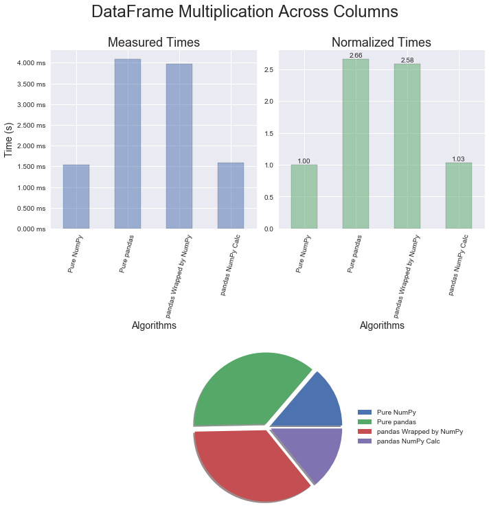

I have been fortunate enough to attend two different training courses put on by Enthought Scientific Computing Solutions. The instructors were Mike McKerns and Alex Chabot-Leclerc who were highly knowledgeable professionals. The most recent class was pandas Mastery Workshop, which I would highly recommend. During the course, Alexandre made numerous comments about performance differences, and I wanted to document some surprising methods to speed up pandas .
The notebook with all the code to recreate this study is located here .
The following versions of packages were used to measure the executions times.
NOTE: The timeit.autorange method was introduced in Python 3.6 and is used to automatically determine how many times to call timeit in the provided notebook.
I'll use the following methods on various operations defined in the table.
| Operation | Application Method |
|---|---|
pandas Series Addition |
|
pandas Series Multiplication |
|
pandas DataFrame Addition Down Columns |
|
pandas DataFrame Multiplication Down Columns |
|
pandas DataFrame Addition Across Rows |
|
pandas DataFrame Multiplication Across Rows |
|
pandas DataFrame Element-Wise Applymap |
|
pandas Date String Format |
|
pandas has a multitude of well thought out quality methods, but there is a price to pay to get them. A younger version of myself used to think, "Straight up NumPy is good enough for me." I refused to even consider a number of great packages. Now that I've been reformed, one of the key ideas I learned is to use the packages that are out there. When something doesn't seem quite right, it's time to dig a little deeper.
If equivalent operations are performed in NumPy and pandas, NumPy is clearly faster. The sunburst graphics below were generated using SNAKEVIZ , which works with cProfiler to display the calls made to the interpreter when code is executed.
arr = np.arange(1e6)

ser = pd.Series(np.arange(1e6))
df = pd.DataFrame(np.arange(1e6).reshape(1000, 1000))
For numerical operations, one would expect NumPy to be faster than pandas and that is the case. In this section, mathematical addition and multiplication examples employing the optimized methods for each package were used. Later on we'll take a look at an example of when the pandas mapping function is utilized. The surprising discovery from this round of profiling is that wrapping a pandas object with a NumPy method provides essentially no performance benefit. It's also interesting to note that the multiplication operator is slightly faster than the addition operator. And yet a bigger surprise still is that converting a pandas object to a NumPy object, performing a calculation, and then creating a new pandas object takes less than half the time to just do the calculation in pandas!

The results for pandas DataFrames are similar to the Series. Again, multiplication is just a bit quicker than addition and the conversion technique provides great improvements in execution time.


 

pandas does have a couple methods built to perform element-wise operations. For Series, there is map and DataFrames use apply and applymap . With the current implementation of these methods, pandas ends up calling a for loop in Python for map and apply, and a nested for loop in Python for applymap. This is where using the conversion technique could be a game changer. Once in NumPy, the operations are performed in a vectorized manner using optimized C routines. The performance gains will be relative to your array size, and in this case for one million elements there was an increase in speed by more than 400 times!

If you read the documentation carefully for most of the methods related to importing time in pandas, you will see there is a fast path for strings formatted in ISO 8601.
iso_8601_format = 'YYYY-MM-DD'
The current profiling for this aspect of the code yielded a speed increase of four times just by altering the string format. There are two takeaways here:

The key points to take away from this article are: